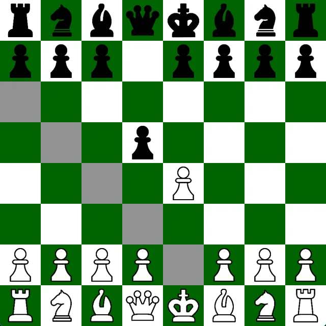

Une application pour apprendre les échecs
Cette application de bureau permet de jouer aux échecs en montrant, à chaque pièce sélectionnée, les cases où elle a le droit d'aller. L'objectif est d'aider un débutant à apprendre les déplacements en jouant, sans avoir les règles sous les yeux. Le projet est en cours de développement.
- Cadre
- Projet personnel
- Dates
- Depuis juin 2026 – en cours
- Équipe
- Seul
- Technologies
- C#, .NET 10, WPF, Git, GitHub
- Lien
- Code source sur GitHub
Pourquoi ce projet
Pour un débutant, la première difficulté aux échecs n'est pas la stratégie mais de retenir comment chaque pièce se déplace. Une application qui montre les coups possibles permet d'apprendre en jouant, plutôt qu'en lisant des règles.
C'était aussi un bon exercice de programmation orientée objet : six types de pièces qui partagent un comportement commun, mais qui ont chacune leurs propres règles.
Ce que fait l'application
- Plateau complet de 8 × 8 cases avec les 32 pièces en position de départ.
- Sélection d'une pièce au clic : les cases où elle peut aller sont aussitôt surlignées.
- Déplacements et prises respectant les règles de chaque pièce, y compris le double pas du pion à son premier coup.
- Tour par tour : impossible de jouer les pièces de l'adversaire.
- Promotion du pion : arrivé au bout du plateau, un menu propose de le transformer en dame, tour, fou ou cavalier.

Défis techniques et solutions
Six pièces, une seule logique d'affichage
Chaque pièce hérite d'une classe commune qui gère son image, sa couleur, sa position et l'affichage des cases disponibles. Chaque type de pièce ne redéfinit qu'une seule méthode : celle qui calcule ses déplacements autorisés. Ajouter ou corriger une règle ne touche donc qu'un seul fichier.
Des règles qui dépendent du sens du plateau
Un pion n'avance pas dans le même sens selon sa couleur, et la dame et le roi changent de place si l'on joue les noirs. J'ai fait dépendre ces règles du camp du joueur plutôt que de la couleur des pièces, pour pouvoir à terme retourner le plateau.
Mettre la partie en pause pendant la promotion
Quand un pion est promu, la partie doit attendre le choix du joueur avant de passer au tour suivant. Le moteur de jeu bloque les clics tant que le choix n'est pas fait, et prévient le plateau par un événement pour qu'il affiche le menu au bon endroit.
Avec le recul : ce que je ferais autrement
- Séparer les règles du jeu de l'interface. Aujourd'hui, chaque pièce est à la fois un élément graphique et le porteur de ses règles, et le moteur de jeu dépend des cases affichées à l'écran. C'est ce qui rend difficile la prochaine étape : pour détecter un échec, il faut simuler des coups « dans sa tête », sans rien afficher. Je construirais d'abord un modèle de plateau indépendant de WPF, puis l'interface par-dessus.
- Tester chaque pièce automatiquement. Une fois les règles isolées, chaque déplacement peut être vérifié par un test unitaire sur une position donnée, au lieu de rejouer des parties à la main.
- Vérifier les bords du plateau proprement. J'utilise des exceptions pour détecter qu'une case est hors du plateau ; un simple test des coordonnées serait plus clair et plus rapide.
Ce que ce projet m'a appris
- Concevoir une hiérarchie de classes propre, où chaque classe a une responsabilité claire.
- Traduire des règles du monde réel en algorithmes, en pensant aux cas limites (bords du plateau, cases occupées).
- Faire communiquer la logique et l'interface par des événements.
- Versionner un projet personnel avec Git, par petites étapes.
Prochaines étapes
- Détecter l'échec et l'échec et mat, et interdire les coups qui mettent son propre roi en danger.
- Ajouter les coups spéciaux : roque et prise en passant.
- Ajouter un mode d'apprentissage guidé : explication de chaque pièce, exercices.
← Projet précédent : réseau de neurones · Projet suivant : refonte du site de tennis de table →